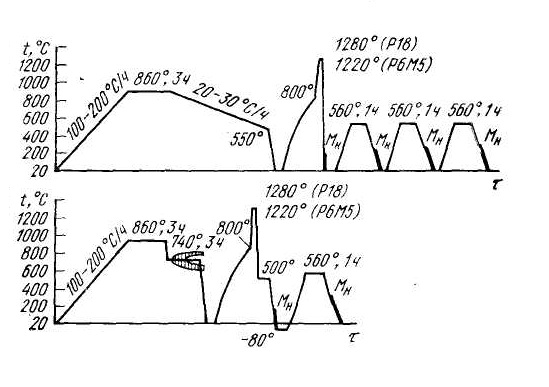

К сталям для измерительных инструментов предъявляется комплекс требований, из которых наиболее важными являются высокая износостойкость, сохранение постоянства линейных размеров и формы при эксплуатации, высокая чистота поверхности (высокая полируемость). Для измерительных инструментов могут применяться как высокоуглеродистые заэвтектоидные стали, так и стали с дополнительным легированием хромом, марганцем, вольфрамом и ванадием. В отечественной практике для измерительных плит наиболее широко используют стали типа Х (0,95 – 1,10 % C; 1,3 – 1,65 % Cr) и 12Х1 (1,15 – 1,25%C; 1,3 – 1,65% Cr).
Высокая твердость сталей достигается закалкой на мартенсит с низким отпуском. Температура аустенитизации для стали Х составляет 650 – 860 °С, а для стали 12Х1 855 – 870 °С. Твердость после отпуска стали 12Х1 выше, чем стали Х, что связано с большим содержанием углерода в стали 12Х1. Высокая полируемость сталей зависит от уровня твердости, который должен быть не ниже HRC 63 – 64. При высокой твердости хорошая полируемость стали обеспечивается получением равномерно распределенных некрупных избыточных карбидов и повышенной металлургической чистотой стали. Наличие крупных неметаллических включений может приводить к выкрашиванию в процессе полирования. Кроме того, неметаллические включения могут стать центрами развития коррозии на поверхности измерительного инструмента.
Для измерительного инструмента важным является стабильность во времени размеров и формы. В закаленном и отпущенном состояниях в стали протекают процессы, вызывающие размерные изменения. К таким процессам относятся релаксация остаточных напряжений, дальнейший распад мартенсита с уменьшением тетрагональности его решетки, мартенситное превращение остаточного аустенита. Низкотемпературный отпуск практически не изменяет количества остаточного аучтенита. Для уменьшения его содержания применяют многократное охлаждение до –70 °С с последующим отпуском при 120–125 °С. В ряде случаев рекомендуется шестикратное повторение обработки холодом и отпуска, при этом количество остаточного аустенита уменьшается в несколько раз.
Влияние многократного охлаждения до – 70 °С на количество остаточного аустенита в стали Х после закалки с 860 °С
| Наименование термической обработки | HRC | Аост, % |
|---|---|---|
| Закалка в масле (20 °С) | 64-65 | 9-11 |
| Закалка в масле + охлаждение до – 70 °С | 64.5-66 | 4-5 |
| То же + отпуск при 125 °С, 12ч + охлаждение до – 70 °С | 65-66 | 2.5-3.5 |
| То же + отпуск при 125 °С, 12ч и третье охлаждение до – 70 °С | 65-66 | 1.5-2.5 |
Для измерительных плит важным свойством является хорошая сцепляемость (притираемость). Она зависит от чистоты поверхности и от состава мартенсита. В частности, высокие содержания хрома ухудшают сцепляемость вследствие образования прочной пленки на поверхности.
Для мелких измерительных плит могут быть использованы мартенситностареющие стали на железоникелевой основе, обработанные на твердость 63 – 65 HRC. К преимуществам этих сталей относится хорошая обрабатываемость резанием после закалки на низкоуглеродистый мартенсит с твердостью HRC менее 30.
Измерительные инструменты типа лекал, шаблонов, скоб изготовляют путем вырубки из листа. Для этой группы инструментов применяют низкоуглеродистые (20, 20Х) и среднеуглеродистые (50, 50Г) стали. Для повышения твердости и износостойкости инструменты из низкоуглеродистых сталей подвергают цементации, закалке с 790 – 810 °С в масло (сталь 20Х) или воду (сталь 20) и низкотемпературному отпуску при 150 – 180 °С, 2 – 3 ч. Инструменты из среднеуглеродистых сталей подвергают закалке с индукционного нагрева и низкому отпуску.
Стали для режущего инструмента (резцы, сверла, фрезы, протяжки, метчики, пилы и т. д.) должны обладать высокой твердостью режущей кромки – HRC 63 – 66; высокой прочностью и сопротивлением малой пластической деформации; теплостойкостью (красностойкостью), особенно при высоких скоростях резания и обработке труднообрабатываемых деталей.
Углеродистые и легированные стали при правильном применении могут удовлетворять первым двум требованиям, но не являются теплостойкими (отдельные марки легированных сталей являются полутеплостойкими).
Углеродистые инструментальные стали являются наиболее дешевыми. Как правило, их применяют для изготовления малоответственного режущего инструмента, работающего при малых скоростях резания, не подвергаемого разогреву в процессе эксплуатации. Углеродистые стали регламентируют по ГОСТ 1435 – 74.
Углеродистые стали У7 и У7А (0,65 – 0,74 % С) после закалки в воду с 800 – 820 °С имеют HRC 63 – 65. Критический диаметр d = 15 – 20 мм после закалки в воду и 4–6 мм после закалки в масло. Низким отпуском при 150 – 160 ОС можно понизить твердость до 61 – 63 HRC.
Стали У8, У8А (0,75 – 0,84 % С) и У9, У9А (0,85– 0,94 % С) после закалки с 780 – 800 °С в воду имеют твердость HRC 63 – 65; dкр = 15 – 20 мм после закалки в воду и 4 – 6 мм после закалки в масло. Низким отпуском при 200 – 220 °С можно понизить твердость до HRC 57 – 59.
Стали У10, У10А (0,95 – 1,04 % С), У11, У11А (1,05 – 1,14 % С), У12, У12А (1,15 – 1,24) и У13, У13А (1,25– 1,35 % С) закаливают с 760 – 780 °С в воду, при этом получают HRC 64 – 66; dкp = 10 – 20 мм после закалки в воду и 4 – 6 после закалки в масло. Низким отпуском при 150 – 160 °С можно получить твердость сталей У10 и У10А HRC 62 – 63; стали У11, У11А, У12, У12А, У13, У13А отпускают при 200 – 220 °С, при этом получают HRC 58 – 59.
Углеродистые стали относятся к сталям неглубокой прокаливаемости, нетеплостойким. Малая устойчивость переохлажденного аустенита углеродистых сталей обусловливает их низкую прокаливаемость (до сечений 5 – 10 мм). Низкая устойчивость аустенита определяет основные достоинства и недостатки таких сталей.
Достоинствами углеродистых сталей является то, что в малых сечениях (до 15 – 20 мм) после закалки достигается высокая твердость в поверхностном слое (HRC 63 – 66) и мягкая, вязкая сердцевина инструмента. Такие свойства благоприятны для такогo инструмента, как ручные метчики, напильники, пилы, стамески, долота, зубила и т. д. В отожженном состоянии углеродистые стали имеют низкую твердость (НВ 150 – 180), в них легко при отжиге получается структура зернистого цементита, что обусловливает их хорошую обрабатываемость при изготовлении инструмента. Заэвтектоидные стали закаливают от температур АС1+ (30 – 50) °С, а доэвтектоидные от AС3+ (30– 40) °С, т. е. углеродистые стали имеют низкую температуру закалки. Такая температура нагрева под закалку технологически легко выполнима, вызывает малое окисление и обезуглероживание инструмента. Закалка осуществляется в воде. После закалки углеродистые стали содержат относительно малое количество остаточного аустенита – до 5 – 8 %, что не уменьшает их твердости и исключает необходимость проведения обработки для распада остаточного аустенита.
Недостатками углеродистых сталей является малая прокаливаемость и закаливаемость. Она не позволяет применять эти стали для инструмента сечением более 20 – 25 мм. Стали нетеплостойки, высокая твердость их сохраняется лишь до температур 200 – 250 °С. Стали имеют высокую чувствительность к перегреву вследствие растворения избыточных карбидов в аустените. Может наблюдаться неоднородная твердость на поверхности инструмента вследствие возможности частичного распада по перлитной ступени при переносе инструмента из печи в охлаждающую среду.
Из-за существенных недостатков углеродистых сталей их мало применяют в промышленности, особенно в механизированном производстве.
Легирование инструментальных сталей для режущего инструмента позволяет уменьшить недостатки углеродистых сталей, т. е. прежде всего повысить прокаливаемость, а также добиться новых существенных качеств инструмента. Свойства и состав легированных сталей для режущего инструмента регламентируются ГОСТ 5950 – 73.
Стали для режущего инструмента подразделяют на стали неглубокой и глубокой прокаливаемости. В группу сталей неглубокой прокаливаемости входят низколегированные стали, содержащие невысокое содержание хрома (0,4 – 0,7 %), ванадия (0,15 – 0,30 %) – 7ХФ, 8ХФ, 9ХФ, 11ХФ; а также стали с вольфрамом – ХВ4, В2Ф. Легирование хромом несколько повышает устойчивость переохлажденного аустенита и прокаливаемость по сравнению с углеродистыми сталями. Использование ванадия для легирования этих сталей позволяет обеспечить меньшую чувствительность стали к перегреву и регламентированную глубину прокаливаемости. Так, применяя разную температуру закалки, можно регулировать толщину закаленного слоя, не опасаясь перегрева стали. По этой причине для сталей типа 7ХФ, 8ХФ, 9ХФ рекомендуют два температурных интервала нагрева под закалку. Более высокая температура закалки позволяет растворить лишь часть карбида ванадия в аустените и повысить его устойчивость, а нерастворенная часть карбида ванадия оказывает барьерное действие на рост зерна. При принятом содержании ванадия в этих сталях (0,15 – 0,30 %) граница образования структуры перегрева повышается до 900 – 950 °С.
Подобные стали используют для изготовления метчиков, пил, зубил, отрезных матриц и пуансонов, ножей холодной резки, подвергаемых местной закалке.
Стали с вольфрамом ХВ4, В2Ф имеют повышенное содержание углерода, что обеспечивает получение карбида и мартенсита с высоким содержанием углерода, благодаря чему эти стали имеют после закалки наиболее высокую твердость (HRC 65 – 67) и износостойкость. Они применяются для обработки твердых металлов, например валков холодной прокатки, при небольшой скорости резания.
В группу сталей глубокой прокаливаемости входят хромистые стали с более высоким содержанием хрома (1,4 – 1,7 %) и стали комплексно легированные несколькими элементами – (хромом, марганцем, кремнием, вольфрамом).
Хромистые стали 9Х1, Х по составу подобны подшипниковой стали ШХ15 и могут быть заменены ею. Комплексно легированные стали 9ХС, ХГС, ХВГ обладают высокой прокаливаемостью. Особенно это относится к сталям с марганцем, поэтому стали типа ХВГ применяют для крупного режущего инструмента, работающего при малых скоростях резания (протяжки, развертки, сверла и др.). Легирование кремнием позволяет повысить устойчивость против отпуска. Стали 9Х5ВФ и 8Х4В2М2Ф2 применяют для деревообрабатывающего режущего инструмента. Сталь 8Х4В2М2Ф2 является низколегированной быстрорежущей сталью. Она является полутеплостойкой, обладает достаточно хорошей теплопроводностью (из-за малого содержания вольфрама) по сравнению с инструментом из классических быстрорежущих сталей, что исключает прижигание дерева при механической обработке его на больших скоростях. Однако существенным недостатком перечисленных легированных сталей является их низкая теплостойкость, что исключает возможность их применения для режущего инструмента, эксплуатируемого в тяжелых условиях, связанных с разогревом режущей кромки. В таких условиях работы можно применять лишь стали с высокой теплостойкостью, т. е. быстрорежущие.
Типовые быстрорежущие стали с вольфрамом применяют в виде трех марок: Р18, Р12 и Р9 (см. табл. ниже)
Химический состав и режимы окончательной термической обработки быстрорежущих сталей (ГОСТ 19265–73)
| Марка стали | Содержание основных элементов, % | Температура нагрева, °С | Твердость после отпуска, HRC |
||||||
|---|---|---|---|---|---|---|---|---|---|
| C | Cr | W | V | Mo | Co | Закалка | Отпуск | ||
| Р18 | 0.7-0.8 | 3.8-3.4 | 17-18.5 | 1.0-1.4 | < 1 | - | 1270-1290 | 550-570 | 62-65 |
| Р12 | 0.8-0.9 | 3.1-3.5 | 12-13 | 1.5-1.9 | < 1 | - | 1240-1260 | 550-570 | 62-65 |
| Р9 | 0.85-0.95 | 3.8-4.4 | 8.5-10 | 2.0-2.6 | < 1 | - | 1220-1240 | 550-570 | 62-64 |
| Р6М5 | 0.8-0.88 | 3.8-4.4 | 5.5-6.5 | 1.7-2.1 | 5.0-5.5 | - | 1210-1230 | 540-560 | 62-64 |
| P6M3 | 0.85-0.95 | 3.0-3.5 | 5.5-6.5 | 2-2.5 | 3-3.6 | - | 1200-1230 | 540-560 | 62-64 |
| Р18Ф2 | 0.85-0.95 | 3.8-4.4 | 17-18 | 1.8-2.4 | - | - | 1270-1290 | 560-580 | 63-66 |
| Р14Ф4 | 1.2-1.3 | 4-4.6 | 13-14.5 | 3.4-4.1 | - | - | 1240-1260 | 560-580 | 63-66 |
| Р12Ф3 | 0.95-1.05 | 3.8-4.3 | 12-13 | 2.5-3 | 0.5-1 | - | 1240-1260 | 550-570 | 62-65 |
| Р9Ф5 | 1.4-1.5 | 3.8-4.2 | 9-10.5 | 4.3-5.1 | < 1 | - | 1230-1250 | 560-580 | 63-65 |
| Р6М5Ф3 | 0.96-1.05 | 3.8-4.3 | 5.7-6.7 | 2.2-2.6 | 5.5-6 | - | 1210-1230 | 540-560 | 63-65 |
| Р9К10 | 0.9-1 | 3.8-4.3 | 9-10.5 | 2-2.6 | < 1 | 9-10.5 | 1220-1240 | 560-580 | 63-66 |
| Р9К5 | 0.9-1 | 3.8-4.4 | 9-10.5 | 2-2.6 | < 1 | 5-6 | 1220-1240 | 560-580 | 63-66 |
| Р18К5Ф2 | 0.85-0.95 | 3.8-4.4 | 17-18.5 | 1.8-2.4 | < 1 | 5-6 | 1270-1290 | 560-580 | 64-67 |
| Р10К5Ф5 | 1.45-1.55 | 4-4.6 | 10-11.5 | 4.3-5.1 | < 1 | 5-6 | 1230-1250 | 560-580 | 64-67 |
| Р9М5К8 | 1-1.1 | 3-3.6 | 8.5-9.6 | 2.1-2.5 | 3.8-4.3 | 7.5-8.5 | 1210-1240 | 560-570 | 65-67 |
| Р6М5К5 | 0.8-0.88 | 3.8-4.3 | 6-7 | 1.7-2.2 | 4.8-5.8 | 4.8-5.3 | 1210-1240 | 540-560 | 64-65 |
Из высокотеплоустойчивых сталей наиболее экономичной является сталь Р6М5Ф3 с содержанием около 1 % С. Она дает повышение стойкости инструмента в 1,5–2 раза большее, чем вольфрамовые стали (Р18, Р12). Сталь Р18, благодаря значительной карбидной неоднородности, малой вязкости и пластичности рационально применять для шлифуемого инструмента небольших размеров (диаметром 15–50 мм). Для большинства фасонных инструментов (фрез, разверток, сверл, протяжек) вместо стали Р18 можно использовать сталь Р12 или Р6М5.
Перед горячей механической обработкой ставится задача раздробления хрупких карбидов на отдельные зерна, в связи с чем слитки подвергают 2–3 кратному обжатию. После ковки и отжига в структуре стали имеются зернистые карбиды с крупными первичными эвтектическими карбидами и более мелкими вторичными. Отжиг быстрорежущей стали ведется, как любой инструментальной стали, на зернистый перлит с нагревом до температур АС1 + (40 – 60) °С, т.е. 860–880 °С, с последующим медленным охлаждением по 20–25 °С/ч до 600 °С. Анализ кинетики распада переохлажденного аустенита показывает, что более рационален изотермический отжиг с нагревом 860–880 °С и изотермической выдержкой при температурах 720–740 °С в течение не менее 3–4 ч с последующим охлаждением на воздухе. При таком отжиге сталь получает твердость не более НВ 255, а для высоколегированных быстрорежущих сталей не более НВ 285. Применение изотермического отжига быстрорежущих сталей значительно сокращает время операции. Повышения температуры нагрева допускать не следует, так как значительно увеличивается устойчивость переохлажденного аустенита, затягивается процесс отжига, а при длительных выдержках могут образоваться стабильные карбиды WC, МоС, которые при дальнейшем нагреве под закалку практически не переходят в раствор аустенита.
Быстрорежущая сталь приобретает красностойкость только после закалки и отпуска. Стали с содержанием 18% W нагревают для закалки до 1260–1280 °С. С уменьшением содержания вольфрама температура нагрева понижается: для сталей с 12% W она составит 1240–1260 °С, с 9%W 1220–1240 °С, а для наиболее распространенных быстрорежущих сталей Р6М5 и Р6М3–1210–1230 °С. Для сталей с молибденом повышение температуры нагрева выше указанных может привести к росту зерна и резкому снижению прочности при изгибе (с 4000 до 2500 МПа).
Высокая температура нагрева быстрорежущих сталей для закалки объясняется необходимостью перевода легирующих элементов в раствор аустенита для получения легированного мартенсита, а после отпуска - вторичной твердости. Нормально закаленные быстрорежущие стали имеют наряду с мартенситом до 30 % остаточного аустенита и до 15 % карбидов не перешедших в раствор; твердость HRC 61 и ниже. Наиболее высокую твердость после закалки имеют стали Р18 и Р12 при нагреве на 1150 °С, а стали Р6М5 и Р6М3 - на 1100 °С. Однако закалка быстрорежущих сталей с этих температур ведет к снижению твердости при отпуске вследствие малой легированности аустенита (значительная часть карбидов не перешла в раствор). Стали, закаленные с пониженных температур, при отпуске резко снижают твердость, а закаленные с нормальных температур дают вторичную твердость до HRC64 и выше после отпуска 560 °С (сталь Р6М5) и 580 °С (сталь Р18). Повышение твердости объясняется выделением высокодисперсных легированных карбидов из мартенсита и остаточного аустенита, превращением остаточного аустенита в мартенсит при охлаждении. Остаточный аустенит быстрорежущей стали, аналогично переохлажденному, очень устойчив и не распадается в процессе нагрева и вы–держки при отпуске. Но в связи с выделением карбидов вовремя выдержки при 560–580 °С он обедняется углеродом и легирующими элементами. Мартенситная точка его повы шается и при охлаждении после отпуска происходит уменьшение количества остаточного аустенита. Так как за одну операцию охлаждения полного распада остаточного аустенита не происходит, то применяют многократные отпуски. Для сталей Р18 и Р9 три отпуска, а для Р6М5, Р6М3, имеющих после закалки около 20 % остаточного аустенита, достаточно двух отпусков. Многократные отпуски проводят при температуре 560 °С для сталей Р6М5 и Р6М3 и до 580 °С для Р18 с часовой выдержкой, охлаждение на воздухе. Разложение остаточного аустенита можно осуществить обработкой холодом при температуре от –80 до –100 °С. При этом твердость повышается до HRC 65 и можно ограничиться одним отпуском при тех же температурах с часовой выдержкой. Обработку холодом следует проводить сразу после закалки, иначе может пройти стабилизация остаточного аустенита; в инструменте сложной формы возможно образование трещин, поэтому более низкие температуры применять не следует.
Перед каждой закалкой быстрорежущая сталь обязательно должна подвергаться отжигу, в противном случае может образоваться нафталинистый излом, сопровождающийся резким снижением вязкости и стойкости инструмента в эксплуатации.
В связи с малой теплопроводностью быстрорежущих сталей их нагревают под закалку с предварительным подогревом до 800–900 °С в камерных печах или соляных электродных ваннах. Выдержка при окончательной температуре нагрева для закалки устанавливается 6 – 7 с на каждый миллиметр диаметра или толщины изделия при нагреве в соляных ваннах и 10 – 12 с при нагреве в камерной печи.
Лучшую стойкость в работе инструмент приобретает при закалке с охлаждением в масле. В случае необходимости уменьшить напряжения применяют ступенчатую закалку в горячих средах. Температура горячей закалочной среды должна соответствовать наибольшей устойчивости переохлажденного аустенита, т.е. 500–550 °С. После выдержки в горячей закалочной среде инструмент охлаждается в масле. На рис. 1 приведены графики полного цикла термической обработки быстрорежущей стали.
Можно изготавливать инструмент из быстрорежущих сталей методом порошковой металлургии. Это дает ряд преимуществ заключающихся в получении более дисперсных равномерно распределенных карбидов, мелкого зерна, повышении эксплуатационной стойкости. Температура закалки такого инструмента не должна превышать температуры спекания (~1200 °С). Поэтому метод порошковой металлургии рекомендуется применять для вольфрамомолибденовых сталей с содержанием не более 6 % W.